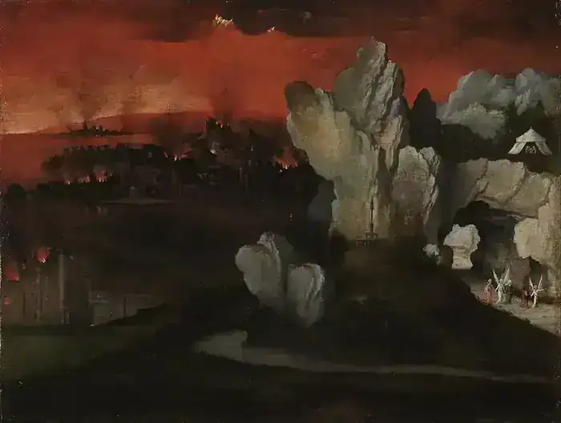
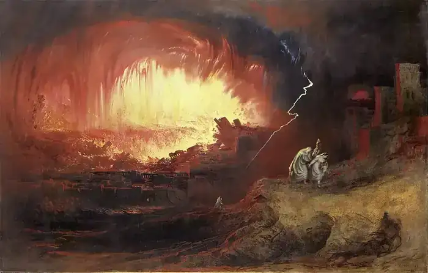
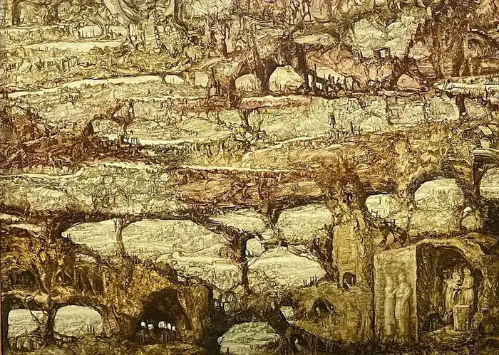

The claim
Tall el-Hammam, a Bronze Age site in the southern Jordan valley, has a destruction layer with evidence of intense heat, shattered building material and possible shocked quartz. In 2021 a team published a paper in Scientific Reports arguing that a cosmic airburst, comparable to Tunguska in 1908, destroyed the city around 1650 BC, and suggested a link to the Sodom narrative.
Maps, diagrams and images






The objections
The criticisms are specific: the chronology is disputed and does not match the conventional date for the Sodom story; the evidence for an airburst — shocked quartz, high-temperature minerals — has been challenged as consistent with ordinary destruction and post-depositional processes; and the identification of the site with Sodom is not accepted by most archaeologists.
The paper's authors have defended the analysis. The debate is ongoing and technical, and the biblical identification is the weakest link in the chain: even if the airburst happened, the link to the text is an interpretation.
Documented: a destruction layer at Tall el-Hammam.
Contested: the airburst interpretation of the evidence.
Contested: the chronology and its fit with the narrative.
Not accepted: the identification with Sodom.
The honest label: live debate — with three separate claims bundled into one story, and each of them weaker than the last.
Why it is in the archive
Because it is a recent, real, peer-reviewed claim that has been over-read in public, and because separating the three claims is exactly the work the archive exists to do.
Open resources on this topic
- PapersOpen-access articles: DOAJ · PubMed Central · Internet Archive Scholar
- BooksPublic-domain and borrowable copies: Open Library · Project Gutenberg · Google Books · Internet Archive
Cite this page
Momin, S. (2026). Sodom and the Airburst. The Larger World Archive. https://drsamonline.github.io/LARGE_GLOBE/sodom-airburst.htmlMomin, Sohil. “Sodom and the Airburst.” The Larger World Archive, 2026, https://drsamonline.github.io/LARGE_GLOBE/sodom-airburst.html.Momin, Sohil. “Sodom and the Airburst.” The Larger World Archive, 2026. https://drsamonline.github.io/LARGE_GLOBE/sodom-airburst.html.@misc{sodom2026sodom,
author = {Momin, Sohil},
title = {Sodom and the Airburst},
year = {2026},
howpublished = {The Larger World Archive},
url = {https://drsamonline.github.io/LARGE_GLOBE/sodom-airburst.html},
note = {Last reviewed 20 November 2026}
}Last reviewed 20 November 2026 · Corrections policy · this page is not peer reviewed
Sources for this page
- Wikipedia, “Tall el-Hammam” — the site and the claimen.wikipedia.org
- Wikipedia, “Tunguska event” — the comparisonen.wikipedia.org
- Wikipedia, “Sodom and Gomorrah” — the narrativeen.wikipedia.org
- Wikipedia, “Impact event” — the physics invokeden.wikipedia.org